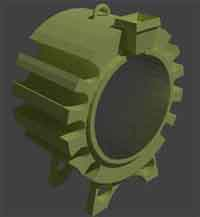
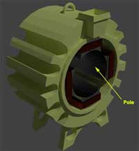
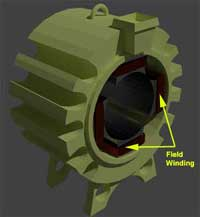
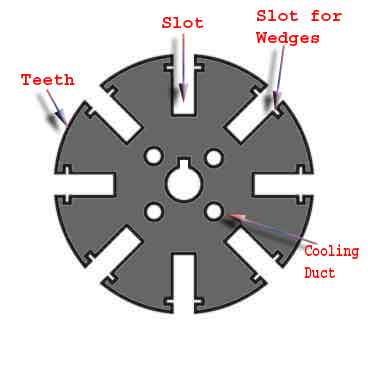
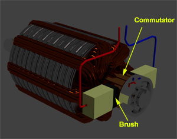

• Poles
• Field Winding
• Armature Winding
Lap Winding
Wave Winding
Commutator of DC Motor
• Brushes
A DC motor like we all know is a device that deals in the conversion of electrical energy to mechanical energy and this is essentially brought about by two major parts required for the construction of dc motor, namely.
1) Stator – The static part that houses the field windings and receives the supply and,
2) Rotor – The rotating part that brings about the mechanical rotations.
Other than that there are several subsidiary parts namely the
3) Yoke of dc motor.
6) Armature winding of dc motor.
8) Brushes of dc motor.
All these parts put together configures the total construction of a dc motor.
Now let’s do a detailed discussion about all the essential parts of dc motor.

Essential Parts of DC Machine
Yoke of DC Motor

The magnetic frame or the yoke of dc motor made up of cast iron or steel and forms an integral part of the stator or the static part of the motor. Its main function is to form a protective covering over the inner sophisticated parts of the motor and provide support to the armature. It also supports the field system by housing the magnetic poles and field winding of the dc motor.
Poles of DC Motor
The magnetic poles of DC motor are structures fitted onto the inner wall of the yoke with screws. The construction of magnetic poles basically comprises of two parts namely, the pole core and the pole shoe stacked together under hydraulic pressure and then attached to the yoke. These two structures are assigned for different purposes, the pole core is of small cross sectional area and its function is to just hold the pole shoe over the yoke, whereas the pole shoe having a relatively larger cross-sectional area spreads the flux produced over the air gap between the stator and rotor to reduce the loss due to reluctance. The pole shoe also carries slots for the field windings that produce the field flux.
Field Winding of DC Motor

The field winding of dc motor are made with field coils (copper wire) wound over the slots of the pole shoes in such a manner that when field electric current flows through it, then adjacent poles have opposite polarity are produced. The field winding basically form an electromagnet, that produces field flux within which the rotor armature of the dc motor rotates, and results in the effective flux cutting.
Armature Winding of DC Motor

The armature winding of dc motor is attached to the rotor, or the rotating part of the machine, and as a result is subjected to altering magnetic field in the path of its rotation which directly results in magnetic losses. For this reason the rotor is made of armature core, that’s made with several low-hysteresis silicon steel lamination, to reduce the magnetic losses like hysteresis and eddy current loss respectively. These laminated steel sheets are stacked together to form the cylindrical structure of the armature core.
The armature core are provided with slots made of the same material as the core to which the armature winding made with several turns of copper wire distributed uniformly over the entire periphery of the core. The slot openings a shut with fibrous wedges to prevent the conductor from plying out due to the high centrifugal force produced during the rotation of the armature, in presence of supply electric current and field.

The construction of armature winding of dc motor can be of two types:-
Lap Winding
In this case the number of parallel paths between conductors A is equal to the number of poles P.
i.e A = P
>
***An easy way of remembering it is by remembering the word LAP-----→ L A=P
Wave Winding
Here in this case, the number of parallel paths between conductors A is always equal to 2 irrespective of the number of poles. Hence the machine designs are made accordingly.
Commutator of DC Motor

The commutator of dc motor is a cylindrical structure made up of copper segments stacked together, but insulated from each other by mica. Its main function as far as the dc motor is concerned is to commute or relay the supply electric current from the mains to the armature winding housed over a rotating structure through the brushes of dc motor.
Brushes of DC Motor
The brushes of dc motor are made with carbon or graphite structures, making sliding contact over the rotating commutator. The brushes are used to relay the electric current from external circuit to the rotating commutator form where it flows into the armature winding. So, the commutator and brush unit of the dc motor is concerned with transmitting the power from the static electrical circuit to the mechanically rotating region or the rotor.
 by
by